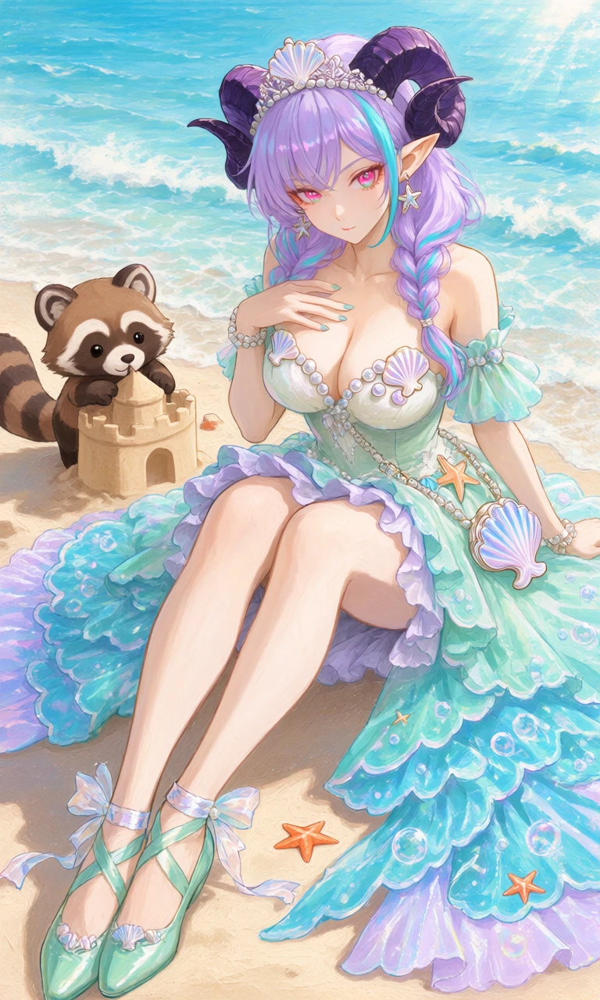
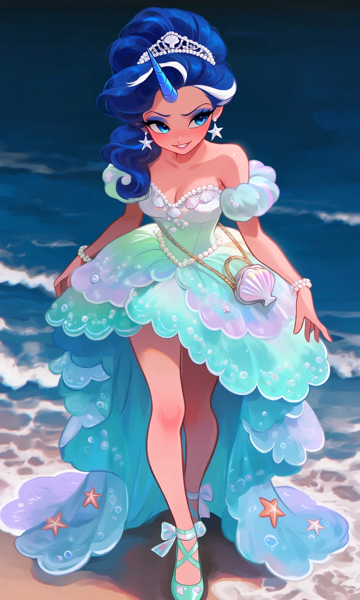

Pearl Tide

Outfit Prompt
She wears an enchanting ocean-inspired dress with a fitted pearl-white bodice decorated with seashells and iridescent pearls. The skirt has a high-low silhouette, short and ruffled in front with long flowing layers behind, resembling cascading ocean waves. The fabric transitions from seafoam green to turquoise and pale lavender, decorated with scalloped hems, tiny starfish, and shimmering bubble patterns.
Accessories include a delicate pearl tiara with a central seashell, a tiny seashell handbag, pearl bracelets, and dangling starfish earrings.
Her shoes are elegant seafoam-green ballet flats with pearly ankle straps, tiny shell decorations, and translucent ribbon bows.
Outfit Examples



